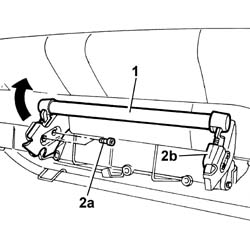

7050A52 device securing rear seat to floor r r
- Path
- Procedures > 70 FITTINGS > 7050 REAR SEATS > 7050A rear seat assembly > 7050A52 device securing rear seat to floor r r
- Kind
- repair procedure (removal / refitting; the operation number is the code)
- Applies to
- all engines; all production periods
- Interactive page
- https://sloeber94.github.io/elrnDB-fDbl/en/#/2585202
Applies to: all engines; all production periods; only with equipment: Doblò trim level
 Removing
Removing
 Refitting
Refitting1. Press the lever and fold down the rear seat.
2. Undo the fixing bolts (2a) and remove the rear seat engagement device (2b).

Applies to: all engines; all production periods; only with equipment: Doblò trim level
Refitting
RemovingPosition the rear seat engagement device and fix it with its bolts.
Refit the rear seat.